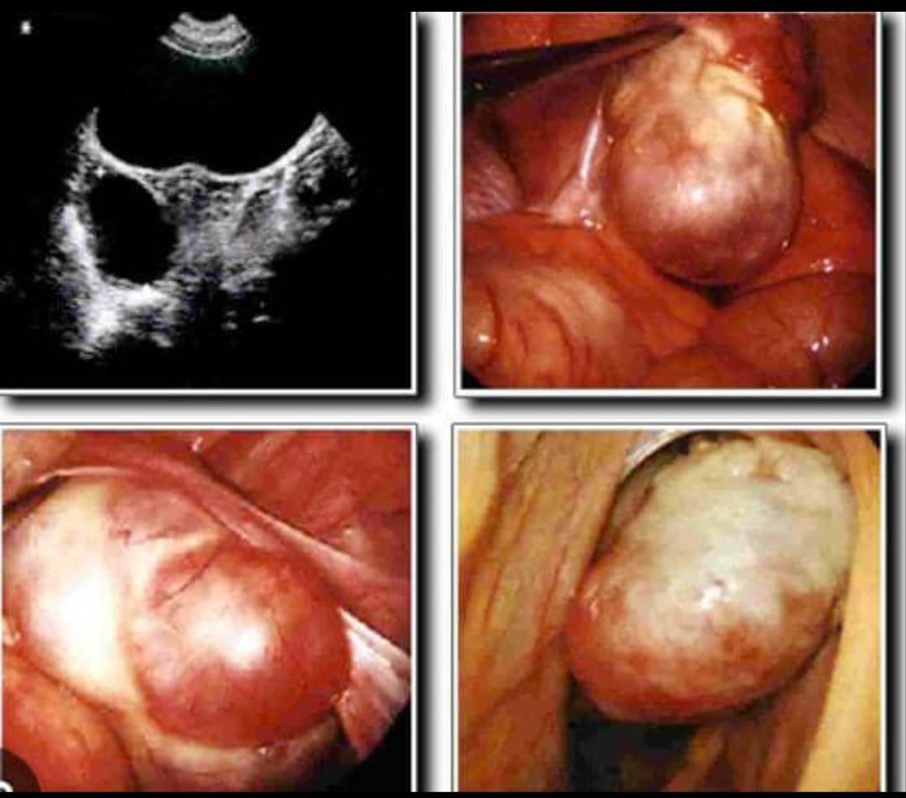

VitaPlante – La fertilité au naturel
Retrouvez l'espoir d'avoir un enfant grâce à des solutions naturelles conçues pour les femmes et les couples confrontés aux fibromes, kystes, trompes bouchées, SOPK, infections ou faiblesse de fertilité.
Pourquoi de nombreuses femmes choisissent VitaPlante ?
Nos produits naturels accompagnent les femmes qui souffrent de fibromes, myomes, kystes, trompes bouchées, règles absentes, infections, ovulation faible ou mauvaise qualité des spermatozoïdes.
Grâce à une approche naturelle et personnalisée, plusieurs couples ont déjà retrouvé l'espoir et réalisé leur rêve de devenir parents.
Fibromes & Myomes
Des solutions naturelles pour aider à réduire les fibromes, calmer les douleurs et améliorer les chances de grossesse.
Kystes & SOPK
Retrouvez un meilleur équilibre hormonal et améliorez votre ovulation naturellement.
Trompes bouchées
Découvrez des solutions naturelles pour aider à déboucher les trompes et favoriser la fertilité.
Faible fertilité masculine
Des produits pour améliorer la qualité, la mobilité et la quantité des spermatozoïdes.
3000+
Femmes et couples accompagnés
92%
Résultats positifs observés
100%
Produits naturels
Et si votre miracle commençait aujourd'hui ?
Vous avez l'impression d'avoir tout essayé sans succès ? Ne perdez pas espoir.
Le parcours vers la parentalité est parfois long et semé d'obstacles. Chez VitaPlante, nous savons que ce n'est pas seulement une question de chance, mais une question d'équilibre.
La nature possède des clés puissantes pour revitaliser votre fertilité :
- Nutrition ciblée : Apport en zinc, fer et oméga-3 pour booster la vitalité.
- Soutien hormonal : Des actifs naturels qui travaillent en harmonie avec votre corps.
- Sérénité retrouvée : Réduire le stress, c'est libérer votre corps pour mieux concevoir.
Ne laissez plus le doute prendre le dessus. Découvrez comment nos produits naturels peuvent harmoniser votre santé globale.
À propos de VitaPlante
VitaPlante est née d'une conviction simple : la nature regorge de ressources précieuses pour accompagner la fertilité et le bien-être. Face à l'épuisement de nombreuses femmes et couples après des années d'attente, VitaPlante vous propose une approche douce, naturelle et humaine.
Notre programme repose sur des plantes médicinales sélectionnées avec soin, un accompagnement personnalisé, et une écoute attentive de chaque personne. Plus qu'un simple traitement, VitaPlante est un parcours de reconnexion à soi, à son corps, et à son rêve de devenir parent.
Nous croyons qu'il n'y a pas d'âge pour espérer, et pas de honte à demander de l'aide. Chaque témoignage de réussite nous pousse à continuer, et chaque nouvelle personne que nous accompagnons est une priorité.
Nous mettons à votre disposition des remèdes naturels très puissants qui neutralisent tous vos problèmes d'infertilité féminine et masculine peu importe le problème que vous avez.
« VitaPlante, quand la nature soutient la vie »
Nos valeurs : Écoute – Bienveillance – Authenticité – Respect
Boutique
Détails des maladies liées à la fertilité
Cliquez sur une maladie pour découvrir les explications complètes, les causes possibles et les solutions adaptées.
Fibromes utérins

Qu'est-ce qu'un fibrome utérin ?
Le fibrome utérin est une masse non cancéreuse qui se développe dans ou autour de l'utérus. Beaucoup de femmes vivent avec des fibromes sans le savoir, mais dans certains cas, ils peuvent empêcher une grossesse ou provoquer des douleurs importantes.
❓ Est-ce que les fibromes empêchent de tomber enceinte ?
Oui, dans certains cas, les fibromes peuvent empêcher la grossesse en déformant l'utérus, en bloquant l'implantation de l'embryon ou en perturbant l'ovulation.
❓ Quels sont les signes qui peuvent montrer que j'ai des fibromes ?
- Règles abondantes ou prolongées
- Douleurs pelviennes
- Ballonnement du ventre
- Difficulté à tomber enceinte
- Fausses couches répétées
❓ Est-ce que je peux être guéri complètement des fibromes ?
Les fibromes peuvent disparaître ou se dissoudre complètement selon les traitements, l'alimentation et l'équilibre hormonal. C'est là que rentrent en jeu les produits du Docteur Hervé et une échographie est toujours recommandée avant et après les traitements.
Pourquoi les fibromes apparaissent-ils ?
Les fibromes apparaissent souvent à cause :
- Déséquilibre hormonal
- Stress chronique
- Inflammation interne
- Facteurs héréditaires
- Alimentation déséquilibrée
Comment les solutions naturelles du Docteur Hervé peuvent aider ?
Les solutions naturelles proposées par le Docteur Hervé sont conçues pour soutenir l'organisme féminin en favorisant :
- L'équilibre hormonal naturel
- La réduction progressive des inflammations internes
- L'amélioration de la circulation sanguine dans l'utérus
- Le nettoyage naturel de l'organisme
Grâce à une utilisation régulière et accompagnée de conseils adaptés, ces solutions peuvent aider le corps à retrouver un meilleur équilibre et favoriser des conditions favorables à la fertilité.
Que dois-je faire si j'ai des fibromes ?
- Faire une échographie pour connaître leur taille
- Suivre les recommandations adaptées
- Adopter une alimentation équilibrée
- Utiliser des solutions naturelles adaptées à votre situation
Kystes ovariens

Qu'est-ce qu'un kyste ovarien ?
Un kyste ovarien est une petite poche remplie de liquide qui se développe sur l'ovaire. Certaines femmes peuvent avoir un seul kyste, tandis que d'autres peuvent en avoir plusieurs. Lorsqu'il y a plusieurs petits kystes sur les ovaires, on parle souvent du SOPK (Syndrome des Ovaires Polykystiques).
❓ Est-ce que les kystes peuvent empêcher une grossesse ?
Oui, certains kystes peuvent perturber l'ovulation normale. Sans ovulation régulière, la grossesse devient difficile ou prend beaucoup de temps.
❓ Quels sont les signes qui montrent que j'ai des kystes ?
- Règles irrégulières
- Absence de règles pendant plusieurs mois
- Douleurs dans le bas-ventre
- Prise de poids inexpliquée
- Acné persistante
- Difficulté à tomber enceinte
❓ Est-ce que les kystes peuvent disparaître ?
Certains petits kystes peuvent disparaître naturellement. Mais dans certains cas, ils persistent et nécessitent un accompagnement adapté pour favoriser leur réduction et améliorer le fonctionnement hormonal.
Pourquoi les kystes apparaissent-ils ?
Les kystes ovariens apparaissent souvent à cause :
- Déséquilibre hormonal
- Ovulation irrégulière
- Stress prolongé
- Mauvaise alimentation
- Excès d'hormones masculines
Quel est le lien entre SOPK et infertilité ?
Le SOPK est l'une des causes les plus fréquentes d'infertilité chez la femme. Il empêche souvent la libération régulière des ovules, ce qui réduit les chances de conception. Cependant, avec une prise en charge adaptée, beaucoup de femmes réussissent à retrouver un cycle régulier.
Comment les solutions naturelles du Docteur Hervé peuvent aider ?
Les solutions naturelles proposées visent à soutenir l'organisme féminin en favorisant :
- L'équilibre hormonal naturel
- L'amélioration de l'ovulation
- La réduction progressive des déséquilibres internes
- Le soutien du fonctionnement des ovaires
Avec une utilisation régulière accompagnée de conseils adaptés, ces solutions peuvent aider à améliorer les conditions naturelles nécessaires à la fertilité.
Que dois-je faire si j'ai des kystes ?
- Faire une échographie pelvienne
- Suivre l'évolution des ovaires
- Adopter une alimentation équilibrée
- Suivre un accompagnement adapté
Trompes bouchées

Qu'est-ce qu'une trompe bouchée ?
Les trompes de Fallope sont des canaux qui permettent aux ovules de se déplacer depuis les ovaires vers l'utérus. Lorsque les trompes sont bouchées ou obstruées, l'ovule ne peut pas se rejoindre avec le spermatozoïde, ce qui rend la conception naturelle très difficile.
Endométriose
L'endométriose est une condition où le tissu qui tapisse normalement l'intérieur de l'utérus se développe en dehors de l'utérus. Cela peut causer des douleurs intenses et affecter la fertilité.
Voir les solutions disponiblesInfections
Les infections de l'appareil reproducteur peuvent affecter la fertilité. Une prise en charge rapide et des solutions naturelles peuvent aider à rétablir un équilibre sain.
Voir les solutions disponiblesLichen sclérovulvaire
Le lichen sclérovulvaire est une condition cutanée rare qui peut affecter la zone génitale. Il est important de chercher un accompagnement médical et naturel pour gérer cette condition.
Voir les solutions disponibles⭐ Témoignages
Découvrez les histoires inspirantes de femmes et couples qui ont retrouvé l'espoir grâce à VitaPlante.
💡 Astuces
Des conseils pratiques pour améliorer votre fertilité au quotidien.
📞 Contact
Entrez en contact avec notre équipe pour toute question ou demande personnalisée.
💳 Paiement
Informations de paiement et commande en ligne.